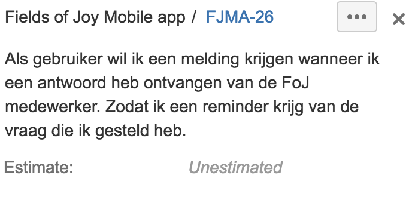
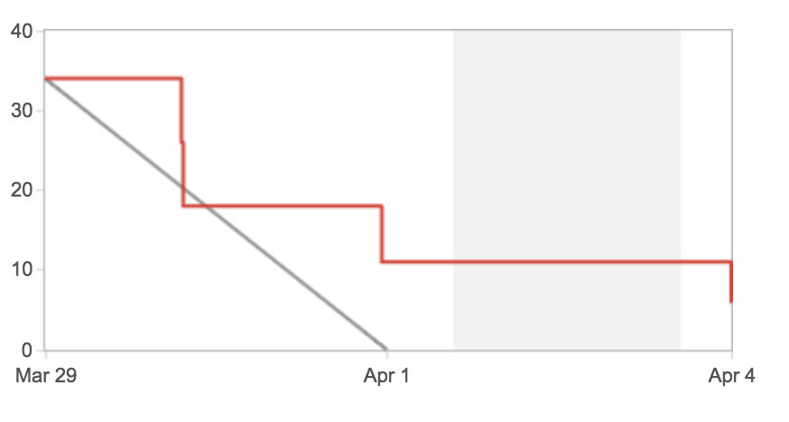

Wat is Fields of Joy? Fields of Joy is een festival dat dit jaar op 16 juli 2016 voor het tweede jaar op rij wordt georganiseerd. Het festival is voor zowel jong en oud toegangbaar doordat er overal rekening mee is gehouden, zo is er bijvoorbeeld een kidz corner waar ouders met kinderen terecht kunnen om hun kind te vermaken. Bij het festival zijn een aantal grote optredens als Dotan, Typhoon en Di-rect. Het festival heeft veel verschillende thema’s waardoor het een echte belevenis is, zo heeft elke stage weer een ander thema waarin het is opgebouwd. Voorbeeld van eerder gemaakt werk voor Fields of Joy is de app die vorig jaar gemaakt is.
Brainstorm Voordat wij (Dick Pino, Rutger Bakker en ik) begonnen met het bedenken van een concept of het onderzoek doen naar bepaalde onderdelen van de app, hebben wij gezamenlijk een brainstorm sessie gehouden. In deze brainstorm sessie werden alle ideeën opgeschreven en verder uitgedacht. Uiteindelijk zijn al deze ideeën gefilterd, de reden voor het filteren was dat het realistisch moest blijven en de app binnen de daedline moest worden opgeleverd. Het resultaat van de brainstorm sessie is hieronder en op de volgende pagina’s te zien. De uiteindelijke ideeën die aanbod komen zijn groen gemarkeerd. Brainstorm sessie Fields of Joy FoJ Mobile app (Read only) Recensie van FoJ in Appstore: “De app voelt heel onnatuurlijk aan en komt niet gebruiksvriendelijk over. Bovendien is de app onbruikbaar zonder internet: dat is killing voor een festival-app. Erg slordig!” Verbeterpunten mobile app: - Gebruiksvriendelijkheid - Offline bruikbaarheid - Performance - Tijdschema - Data verzameling Ideeën voor de mobile app: - Newsfeed: Laatste nieuws weergeven omtrent updates, aftermovie, het volgende event etc. - Abonneren op artiest voor pushnotificaties: Wanneer er geabonneerd wordt op een artiest krijgt de gebruiker (enkele minuten voordat de artiest begint te spelen) een pushnotificatie. Daarbij krijgt de gebruiker een tip om de map te bekijken waarin wordt aangegeven waar deze artiest gaat optreden. - Eigen programma samenstellen van artiesten Klein overzicht met informatie welke artiesten de gebruiker graag wil zien. Gebruiker kan timetable samen stellen door artiesten aan te vinken in de line-up. En aan de hand daarvan kan een ‘eigen’ timetable gegenereerd worden. - Music player met fragmenten uit het liedje van artiesten die bij FoJ aanwezig zijn. Per DJ 1 muziek fragment van ca. 30 seconden. - Spotify koppeling? (bijvoorbeeld album van artiest in spotify) - inlog functie voor extra features (facebook google +) - Dichtsbijzijnde bar, toilet, eetkraam, shop etc. vinden. Met behulp van gps met pijl - iBeacon bij binnenkomst festivalterrein (of na scannen ticket). Scherm met bijvoorbeeld verschillende opties als: ‘Ik wil munten halen”, “ik wil naar de stages”, “Ik wil naar het toilet”. Zodat je gelijk na binnenkomst weet waar je heen moet gaan. - iBeacons bij elke stage/area Bij elke stage weet de app dat je bij een bepaalde stage bent. Bij het openen van het timetable zie je ook gelijk de timetable van de area waar je bent. Ook kan er informatie worden vrij gegeven over een bepaalde stage, bijvoorbeeld over de genre. - Soort stappenteller Hoe intensief ben jij los gegaan op FoJ festival? - “Live” functie in facebook gebruiken Vanuit de app een live video maken van jezelf tijdens het festival - iBeacons installeren op barren en toiletten. - Functie in de app dat dichtbijzijnste bar of toilet wordt opgezocht. De app wijst je de weg naar bepaalde locatie met behulp van bijv. een pijl. - Live Photosharing met vriendengroep. Niet meer onnodig dezelfde foto’s maken omdat je kameraad die al heeft gemaakt. - Buienradar implementeren voor het weer. Sneller kunnen handelen wanneer er een regenbui aan blijkt te komen - Groep aanmaken en GPS van groepsleden kunnen tracken, Zodat je je vrienden niet kwijt raakt en weet waar ze zijn. - Livebeeld voor wachtrij muntverkoop, wc’s, bar’s die je op de app kunt bekijken, zodat je op minder drukken momenten je biertje gaat halen, of munten bij koopt etc. - iBeacons voor kraampjes, wanneer je er langs loopt je een push bericht kunt krijgen voor het tonen van prijzen en assortiment. - Media pagina waar afbeeldingen komen op te staan van festivalgangers die een foto hebben gemaakt en geupload en dit gelimiteerd weergeven. - Iets van shazam integratie waarmee festivalgangers een nummer kunnen herkennen wanneer zij een area inlopen. - Optie om teksten te vergroten bij inloggen van het scherm, voor mensen met slechter zicht. De wensen van de klant - Customer care in app, direct je vraag stellen, chatfunctie (Middels Watermelon of whatsapp) - Analytics opvragen van app (hoeveel verkopen vanuit app?) - Analytics integreren met website. Team Nijhuis beheert dit van de website - Kaartscan wordt gekoppeld aan mobiele nummer of app - Ontvang whatsapp met verwijzing naar app, timetable e.a. - Social sharing mist op website - ook doorzetten naar app? - 360 graden video ook inzetten in app? - Waar ben ik op dit terrein? Via GPS - via een markertje - Timetable opbouw - per area opzetten eventueel - Eigen playlist maken - je eigen draaiboek (Kwartier van te voren melding, ga naar die area) -> eigen time table maken? - Push notificaties - Selfie maken in frame in app (upload functie) direct op instagram of facebook pushen - Chatfunctie Uiteindelijk zijn alle ideeën waar wij potentie inzage meegenomen in een gesprek met Ramon Peters van Yellow Agency. Tijdens dit gesprek representeerde hij Fields of Joy en werden de wensen vanuit zijn kant duidelijk voor ons. In dit gesprek hebben wij de groen gemarkeerde ideeën meegenomen en samen met Ramon onderverdeeld in Must haves, Nice to haves en voor de toekomst. Het uiteindelijke pakket van eisen (Must haves) - Nieuwsfeed met share mogelijkheid - De feed opbouwen vanuit Facebook en een eventuele nieuwspagina op de FOJ website - Social sharing FB - Abonneren op artiest en zo je eigen tijdschema samenstellen - GPS integratie, duidelijk (stages tekenen via Polygon of overlay) - Selfie mogelijkheid (gedacht vanuit promotie voor volgend jaar) Nice to haves - Weer integratie - Spotify 2017 - Customer care - iBeacons
Nadat de eisen aan de app duidelijk zijn gemaakt heeft Rutger Bakker zich bezig gehouden met het bedenken van een concept. Hierbij heeft hij eerst onderzoek gedaan naar het festival om zo een beter uitgangspunt te hebben. Hieronder is het onderzoek te zien: KLANT Fields of Joy Festival OPRACHT Hoe verbeteren we de app van FoJ en hoe verbeteren we de naamsbekendheid van het festival? VRAAG Hoe creëren we binnen 4 maanden een gebruiksvriendelijke festival app die ook functioneert zonder connectie met het internet? INFORMATIE OVER DE KLANT FoJ Festival is een meerdaags festival waar “good vibes”, “good music” en “good food” centraal staat. Een keer per jaar in de zomer vind FoJ festival plaats op het Hulsbeek in Oldenzaal. Aankomend jaar zal de 2e editie van FoJ zijn. Op het festival zijn verschillende area’s, FoJ heeft heeft veel verschillende soorten muziek. Good music: bands (talent en top), techno, house, singers/songwriters, hiphop acts, jaren ’70, ’80 en ’90, feestmuziek. Good food (excellent food): Eethoek, eettentjes, rolling kitchens, BBQ. Good vibe: genieten met zijn allen van een leuk feestje op het Hulsbeek in Oldenzaal. DILEMMA’S Imago: de naamsbekendheid van FoJ is niet bekend. Gebruiksvriendelijkheid: de app is niet gebruiksvriendelijk en de performance is laag. Beleving: de beleving in de app voldoet niet aan de beleving die FoJ wil laten zien. DOEL Het imago en de beleving van het festival vergroten met behulp van een app. FESTIVAL APPLICATIES Zwarte Cross: Startscherm: - Nieuws (nieuwsfeed) Overige schermen: - Programma (artiesten en line- up) - Favorieten (eigen programma samenstellen en notificatie start optreden) - Kaart - Navigatie Over de app: - Navigatie van de app is gebruiksvriendelijk en duidelijk te begrijpen. - Beleving en sfeer in de app is goed. - Fonts zijn slecht leesbaar en niet functioneel in een app. - De app is vrij basic, er is wel een feature waar je notificaties van je favoriete artiesten krijgt voor het optreden. Ook kun je een eigen programma samenstellen. - Zwarte Cross heeft een goede naamsbekendheid en imago. - De app is professioneel en functioneert goed. - Niet veel extra features. Lowlands: Startscherm: - Nieuws - Banners - Weersverwachting Overige schermen: - ‘mijn lowlands’ (plan jouw dag, maak je eigen lowlands schema). - Timetable - Stages - Lowlands map - Douwe egberts - Nedap’s memory - Trash lottery - Lowlands radio - Instellingen Over de app: - Navigatie is niet functioneel, je weet niet waar je op klikt. (icons niet duidelijk). - Beleving en de sfeer van het festival komt goed terug in de app. - De app is redelijk uitgebreid en heeft veel opties. - Naamsbekendheid en imago is zeer goed. - Het design, performance, functies is goed (behalve navigatie). - Weersverwachting komt te vaak terug op startscherm. DOELGROEP —- Festivalgangers ———— Jonge gezinnen ———— Lokale feestgangers ———— Techno goeroe’s ————- Jaren 90 liefhebbers ————- Fans van muziekgroepen ————- Vriendinnen ————- Vrienden Persona’s Heleen de Boer, 24 jaar (progressive rock). Dennis Jansen, 35 jaar (back to the 90’s muziek). Michel Buryag, 21 jaar (hip hip). Merel Boerrigter, 20 jaar (techno). Annelies de Wit, 38 jaar (singers, songwriter, bands). Bram Bijen, 19 (house). Door dit onderzoek van Rutger is het mogelijk om een ontwerp te maken waarbij rekening wordt gehouden met de sterke punten van de concurrentie, de doelgroep en de verschillende persona’s. Nadat duidelijk was voor wie de app bedoeld was en wat de eisen zijn is Rutger begonnen aan de wireframes. Zo werd het mogelijk voor de klant om een idee te krijgen welke kant wij op wilde gaan met de app. Op de pagina hiernaast zijn enkele wireframes te vinden die zijn gemaakt voor de app.
Het opmaken van User stories Om een project te starten waarbij de scrum methodiek wordt gebruikt, is het van belang dat er User stories worden opgesteld. Dit zijn tickets/taken die worden aangemaakt met een korte beschrijving over wat de gebruiker wil. Hieronder is te zien hoe wij deze User stories hebben opgebouwd.
Epics. Dit zijn de overkoepelende vormen van de User stories. Epics geven de hoofdzaken weer Uiteindelijk zijn er per epic verschillende User stories gemaakt, dit wordt gedaan om de problemen zo klein mogelijk te maken. Hierdoor kun je overzichtelijker werken en is het tijdens het debuggen eenvoudig om te achterhalen waar problemen zitten. Een User story kan er als volgt uitzien:  Er wordt gedefinieerd wat een gebruiker wil en waarom die dit wil. De story hierboven is een onderdeel van de epic customer care. Deze story is verkleind tot alleen het krijgen van een melding bij reactie, zo is dit goed te realiseren en kan je je focussen op een specifiek onderdeel. Wanneer de User stories klaar zijn worden deze verzameld in een backlog, dit is het overzicht van alle stories die nog moeten worden opgepakt en/of ingeschat. Sprintplanning Onder de User story op pagina 54 zie je “Estimate: Unestimated” staan. Dit houdt in dat de story nog niet is ingeschat. Wanneer de User stories zijn aangemaakt is het tijd om deze in te schatten. Dit wordt gedaan tijdens de sprint planning aan de hand van sprint poker met het team. Sprint poker houdt in dat de User stories in de backlog worden besproken en er vervolgens een inschatting komt. Deze inschatting komt tot stand doordat iedereen aan de hand van kaarten aangeeft hoeveel werk een story kost. Uiteindelijk worden de verschillen tussen de inschattingen besproken. Na de bespreking van de inschatting is het tijd om het proces nog een keer te herhalen totdat iedereen het over de inschatting eens is. Door deze manier van inschatten raakt het hele team erbij betrokken. Iedereen moet namelijk een inschatting doen over hoeveel werk een story kost.
Sprint Nadat wij de sprintplanning hebben voltooid en er genoeg stories zijn ingeschat om een sprint op te zetten, is het daadwerkelijk tijd om er een op te zetten. Een sprint is een verzameling van stories gebaseerd op het ingeschatte aantal werk. Ieder team weet ongeveer hoeveel punten zij in een sprint van een of twee weken kunnen verbranden, aan de hand hiervan wordt dan ook de sprint aangemaakt. Tijdens het Fields of Joy project zaten wij vaak tussen de 20 en 30 punten die wij konden verbranden in een week. Hier werd dan ook een sprint op gebasseerd. Als de sprint uiteindelijk is afgelopen na een of twee weken wordt de sprint beïndigd, hierna kan je inzien hoeveel punten je daadwerkelijk hebt verbrand in de burndown chart. Dat ziet er dan zo uit:  Scrum master Tijdens de start van het proces werd Rutger aangesteld als scrum master, echter doordat hij bezig was met het ontwerpen viel die een beetje buiten het development team en kreeg hij niet alles altijd mee. Hierdoor is de keuze gemaakt dat ik zijn taak als scrum master heb overgenomen. De taken die aan mij werden overgedragen was het ervoor zorgen dat het scrum proces goed verliep en het begeleiden van stand-ups en retrospectives. De stand-up bestaat uit het bijeenkomen van ongeveer 15 minuten. Bij de stand-up is het team aanwezig en wordt er een rondje gedaan waarbij iedereen de volgende vragen beantwoord: - Wat heb ik gister gedaan? - Wat heb ik vandaag gedaan? - Waar loop ik tegen aan? Doordat iedereen deze vragen beantwoord, krijgt het hele team een indruk over hoe het proces ervoor staat. Mocht iemand in het team ergens tegen aan lopen, dan wordt er tijdens de stand-up kort gepraat over een mogelijke oplossing. Aan het einde van een sprint wordt er een retrospective gehouden. Tijdens een retrospective wordt er teruggekeken op de afgelopen sprint en wordt er aangegeven door iedereen in het team wat er goed of niet goed ging. Over deze punten wordt gediscussieerd totdat er een oplossing komt hoe dit beter kan worden gedaan tijdens de volgende sprint. De oplossing van de discussie wordt ook wel een actiepunt genoemd. Een actiepunt houdt in dat hier extra aandacht aan moet worden besteed, hoe dit moet worden gedaan en wie dit oppakt. Uiteindelijk wanneer alle punten zijn behandeld is het de taak aan de scrum master om alle punten te formuleren naar positieve punten en verbeterpunten. Aan de hand van de verbeterpunten worden dan de actiepunten verder uitgebreid. Gedurende de volgende sprint is het belangrijk om in de gaten te houden hoe de verbeterpunten tot zijn recht komen. Mocht dit niet zo zijn zal de scrum master waarnodig sturen zodat het de goede richting op gaat.
Het is mogelijk om de app vanaf eind juni te downloaden in de app store en google play store. Kwaliteitscontrole Om er zeker van te zijn dat de app goed zal functioneren hebben wij het laten testen door de klant zelf en door collega’s. Hierdoor hebben wij ervoor gezorgd dat er een aantal bugs zijn verholpen. Naast het testen hebben wij zo goed mogelijk de kwaliteitsstandaarden proberen na te streven door met linters te werken en regelmatig met begeleiders de code te analyseren. Hierdoor is het mogelijk om de app op te leveren die goed is opgebouwd en een minder grote kans heeft op bugs. Voordat de app de stores in ging was het belangrijk dat alle betrokken partijen het eens waren met de look en feel van de app. Hiervoor hebben wij contact opgenomen met Beeldgeneratie. Als eerder aangegeven ging deze partij over de huisstijl van de app. Arbo- en milieu eisen Tijdens het werken aan deze app heb ik te maken gekregen met de volgende arbo-eisen: - Een goede werkplek ( verstelbaar bureau, verstelbare stoel ) - Een veilige werkomgeving ( snoeren weggewerkt ) Het bedrijf voldoet aan beide eisen. Samenwerking Tijdens de ontwikkeling van Fields of Joy heb ik nauw samengewerkt met 2 andere stagiaires. Tijdens dit project was er een duidelijke rol verdeling waardoor wij met wij alle drie een eigen focus hadden tijdens het proces. De rolverdeling binnen het project was als volgt: Rutger Bakker was verantwoordelijk voor het bedenken en uitwerpen van een concept, het ontwerpen van de media-uiting en het opleveren van de definitieve ontwerpen. Dick Pino en ik (Tim Ruiterkamp) waren verantwoordelijk voor de voorbereidingen van de app, de realisatie ervan en het opleveren van app. Hierbij lag de focus van Dick met name op de back-end en die van mij op de front-end.
De klant heeft tijdens het proces vaak de mogelijkheid gehad om feedback te geven op het gemaakte werk, hierdoor is de kans op last-minute grote wijzigingen erg klein. Het product wordt gepresenteerd aan de klant en de klant heeft twee dagen de app kunnen testen op zijn eigen telefoon. Nadat de klant akkoord ging met de app was het nog belangrijk dat de andere externe partijen ook akkoord gingen met de app. Het is belangrijk dat iedereen tevreden is over de app zodat je iedereen met een goed gevoel terug kan laten kijken naar het proces en het opgeleverde product. Een eis vanuit Nerds & Company is dat het een app van goede kwaliteit is, dit is erg belangrijk voor Nerds & Company. Wij hebben tijdens het bouwen van deze app zo goed mogelijk de kwaliteitstandaarden nagestreeft en er zo voor gezorgd dat de eisen zijn gehaald. Wanneer de klant tevreden is over het opgeleverde product en hij functioneert goed dan kan er met zekerheid gezegd worden dat de app is opgeleverd naar de eisen van het bedrijf. Na de oplevering wordt het project overgedragen aan Operationele Services die eventueel latere wijzigingen of feedback doorvoeren.
Het was een erg leuk maar ook uitdagend project en dat is ook een van de redenen dat het opstarten van het project wat moeizaam ging. Er moest veel onderzoek worden gedaan naar de manier van werken, de verschillende technieken en het verwerken van externe data. Toen dit eenmaal stond ging het een stuk vlotter en zeker de laatste paar weken van het project werkten we als team goed samen. Dit resulteerde in een beter werktempo, prettigere samenwerking en een positieve werkhouding. Ik ben erg tevreden over het product omdat het er goed uitziet en prettig is in gebruik. Ook is de klant ook erg tevreden over de verbeteringen ten opzichte van de oude app. Het werken met de scrum methodiek was voor mij aan het begin van het project nog nieuw. Maar na onderzoek doen en te discussieren over scrum deed ik veel kennis op en begon ik het steeds beter te begrijpen. Uiteindelijk kan ik zeggen dat scrum een zeer goede manier van werken is doordat er veel grip op het proces is en ook de manier van werken prettig is. Verbeterpunten voor de toekomst zijn dat bijvoorbeeld sprintplanningen beter moeten worden ingeschat en realistisch moeten blijven. Er werden vaak punten ingeschat die wij niet konden verbranden in een sprint. Ook Communicatie was een puntje waar soms nogal veel onduidelijkheid over was, in de toekomst zou dit kunnen worden verbeterd door bijvoorbeeld betere afspraken te maken, vaker overleg met het gehele team en betere communicatie met externe bedrijven. Het gehele project was erg leerzaam mede door de vele nieuwe technieken die ik heb geleerd als het maken van apps via Ionic, het werken met AngularJS, Xcode, Android studio, de Scrum methodiek en plaatsen van apps in de store.